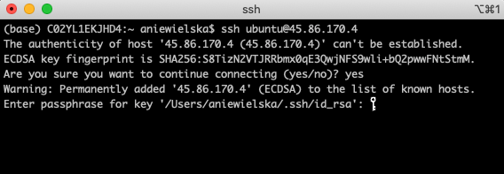
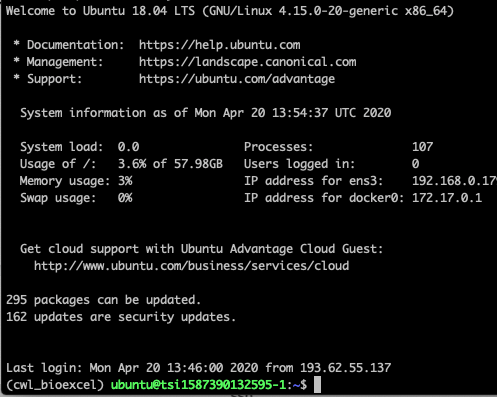
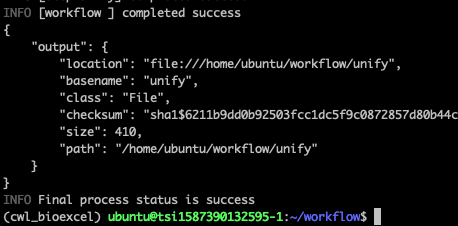

Accessing the VM¶
Login to the bioexcel portal at https://bioexcel.ebi.ac.uk/ if you have not already.
Click on Deployments at the top.
You should see a list of all your deployed VMs (Virtual Machines). Click on the button that begins CWL VM enviroment for (the last part will be a unique ID for the machine you deployed.
Under outputs you should see a variable lablled external_ip, you will need this to log in to the VM.
Below this is a variable labelled ssh_command, this is what you will need to type into a terminal or SSH client to access your VM, it should have a value similar to
ssh ubuntu@45.86.170.4. The IP address (the numbers) might be different to this example, this is fine as they should be unique.Run that command from your Terminal (or Git Bash in Windows). If you have secured your key with a passphrase, you will be asked for it. Please, provide it.
If you managed to log in to the VM successfully, you will see sth like that:

{kind=link}
{kind=link}
Validate the VM works¶
Now you will only check, if CWL is properly installed in the VM.
In the terminal of you VM type: cd workflow
And then run the test workflow using cwltool, by running a command:
cwltool hashsplitter-workflow.cwl --input resources/test.txtYou should see something like this:
Disconnect from the VM by pressing
CTRL-D
{kind=link}